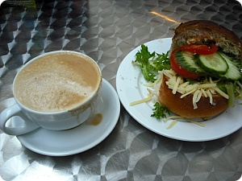
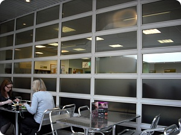
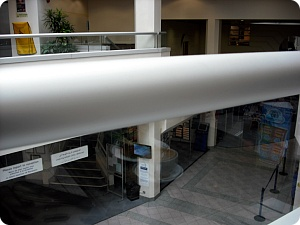
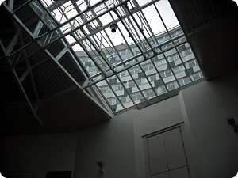

지하철역앞에 굉장히 요상한(?) 디자인의 건물이 있는데
(그리고 요 건물덕에 이사첫날 집에가는 길 잃어버릴(....)걱정은
촘 덜었구나 라고 생각했음;;;)
알고봤더니 Morden Civic Centre에
안에 도서관이 있었다 +_+
더불어 커피숍도 우히히힛

커피는 ￡1 치즈롤은 ￡1.89정도?
오오~학교식당보다 커피가 싸 +_+
신난다~신난다~♬ (←;;;;)
동네에 코스타/네로/스타벅스가 하나도없어서
좌절하고 있었는데;;; (그리고 네로간다고 버스타고 윔블던가는인간;;)
대만족 +_+

요래 커피숍 바로옆은 도서관
도서종류는 그냥그랬음
도서관내 책상은 널찍해서 마음에 든다 +_+

커피숍에서 내려다본 로비
따땃하고 집에서도 가깝고 앞으로 자주 들락거릴듯 ^^

의미없이 찍어본 천장
죠 창넘어로 보이는 건물외관이 밖에서 보면
촘 요상시렵습니다;; 디자인의도가 무엇이었을까;;;
런던이사온지 한달째
근데 오히려 런던은 워낙 외국인들이 많다보니
별 실감이 안나네요;; 쩝
Maidstone서 그렇게 레어였던 한국사람도 대따많고^^
귀차니즘을 극복하고 열심히 돌아댕겨야하는데
오히려 교통비때문에 무서워서 못돌아댕기겠어요;; OTL